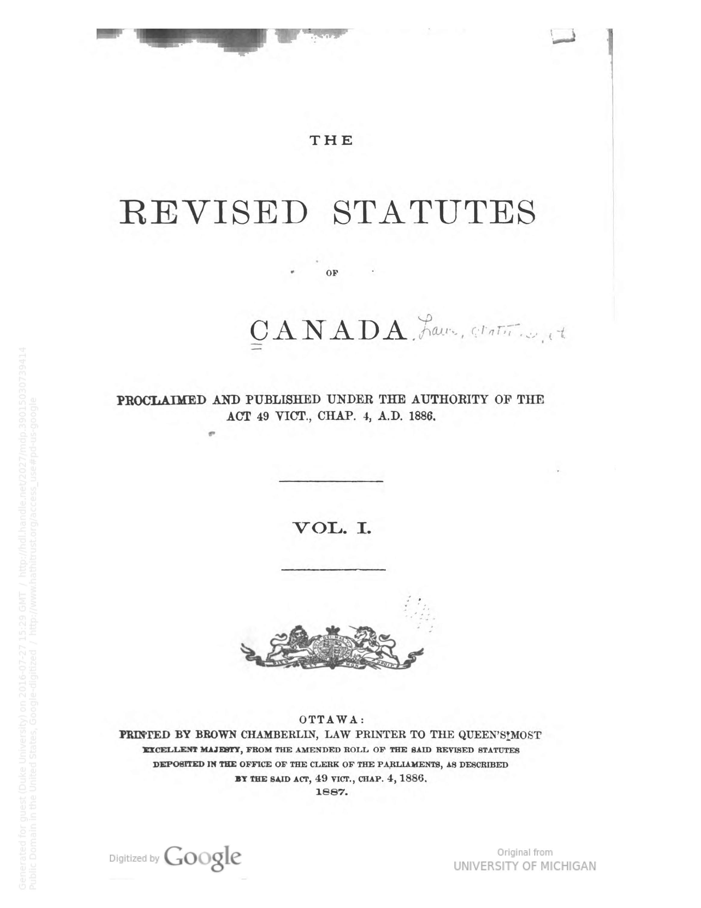

Title of a Legal Work
Sean Chen
Created: 2016-07-27 Wed 14:15
General Instructions
Works Created after 1500 (6.2.2.4)
If there is no title or form of title in the original language established as the one by which the work is commonly identified or in case of doubt then:
- choose the title proper of the original edition (see 2.3.2) as the preferred title.
Caveats
- Instructions for different classes of legal materials
- Remember that this is to form the basis of an AAP
Preferred Title for a Legal Work
Modern Laws, Etc.
- Radically simplified
- Find the title from a series
And what is a law?
Order of Preference
- Official short title or citation title
- Unofficial short title or citation title used in legal literature
- Official title of the enactment or compilation
- any other official designation
Compilation of Laws, Etc.

Compilation of Laws, Etc.

Single Laws, Etc.

Single Laws, Etc.

Types of Titles
- short title of a legal work
- citation title of a legal work
Ancient Laws, Certain Medieval Laws, Customary Laws, Etc.
- Doing the right thing here …
- Using the most commonly identified title.
- be it reference sources
- or otherwise
- In the authority file already and established!
Ancient Laws
One Treaty
Treaty Definition via Black's Law Dictionary
An agreement formally signed, ratified, or adhered to between two nations or sovereigns; an international agreeemnt concluded between two or more states in written form and governed by international law.
- Official title of the treaty
- Short or citation title
- Any other "official" designation
Example Treaty


Compilations of Treaties
- Has a collective name
- Rarely see these in practice
- Fallback to general preferred title instructions
Treaty Caveats
- There use to be a distinction between multilateral and bilateral treaties. This is gone now.
- Treaties etc. used to be used for bilateral treaties as a conventional collective title.
Other Kinds of Legal Materials
- Just follow regular title instructions
Constitutions

Reporter

Court Rules
Records and Briefs

Variant Title for a Legal Work
- General guidelines
- Follow basic instructions in RDA 6.2.1
- Any way its been cited or issued
- Different transliterations
- Exceptions for what is on the piece
- only record when
- Differs signficantly
- Reasonable searcher would use
- Note though this will be the preferred title in many cases
- only record when
Citations
- Often legal works have citations
- F.3d
- R.S.C.
- These can be variants!